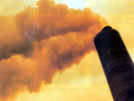
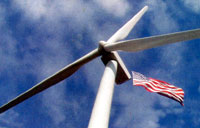
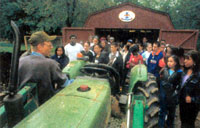

Green Gazette
The Climate Stewardship Act didn't make it through Congress last fall, but the environment may still prove the winner. The first attempt by Congress to address the threat of global warming since 1998, the McCain-Lieberman Climate Stewardship Act, failed to pass the Senate by a narrow margin, but Sen. John McCain says he may reintroduce the legislation as early as this spring.
McCain and the bill's co-sponsor, Sen. Joe Lieberman, D-Connecticut, say they are encouraged by the support the failed bill received; the vote was a close 43-55. "We lost a battle today," McCain said, "but we'll win over time because climate change is real. And we will overcome the influence of special interests over time."
The Climate Stewardship Act would cap carbon dioxide (C0 2 ) emissions from power plants, oil companies and factories, and create an emissions trading system under which companies that achieve more pollution reductions than required can sell their excess reductions to other companies to help them meet their commitments.
The aim of the legislation is to begin solving the problem of global warming, which poses a wide range of threats to the environment, the economy and public health. Carbon dioxide, produced by the combustion of coal, oil and natural gas, is the most abundant of the green house gases, which are responsible for raising the Earth's surface temperature. Scientists predict global warming will cause species extinctions, rising sea levels, an increase in deaths from extreme heat, and the migration of tropical diseases northward.
Kevin Curtis, National Environmental Trust vice president of government affairs and a supporter of the McCain-Lieberman legislation, says three weeks before the October vote, the bill reportedly only had 32 votes firmly supporting it and more than a dozen senators still on the fence. "Our fear was that the bill might pull in fewer than 40 votes," he says, which would have doomed it for the foreseeable future. "But the majority of the undecided senators broke in favor of the bill."
According to information from McCain's office, a Massachusetts Institute of Technology (MIT) study estimated the legislation would cost only about $20 per household. Analysts predicted the impact on the U.S. GNP at no more than 0.01 percent. A second study by the Boston-based Thellus Institute predicted that if the bill becomes law, it will reduce U.S. energy demands and save U.S. residents $48 billion by 2020.
[SOURCES: AMANDA GRISCOM AND GRIST MAGAZINE (SUBSCRIBE TO GRIST'S FREE E-MAIL AT WWW.GRISTMAGAZINE.COM/SIGNUP ); SEN. JOHN MCCAIN AND SEN. JOE LIEBERMAN, AND THE NATIONAL WILDLIFE FEDERATION ( WWW.NWF.ORG )]
Northeast Crafts Plan to Cut Carbon Emissions
The northeastern United States isn't waiting for Congress to tackle the problem of global warming. The governors of 10 states, led by New York Gov. George Pataki, agreed last July to begin a regional initiative to curb carbon dioxide (C0 2 ) emissions. Their goal is to establish a flexible, market-based cap and trade program by April 2005.
Pataki and the governors of Connecticut, Vermont, New Hampshire, Delaware, Maine, New Jersey, Pennsylvania, Massachusetts and Rhode Island agreed to develop a regional C0 2 cap and trade program in an effort to reduce C0 2 emissions from power plants. Maryland has indicated it may participate in the discussions at a later date.
The plan would center on an emissions trading system to require power generators to reduce emissions. The initiative grew out of recommendations made to Pataki by the Greenhouse Gas Task Force he appointed in June 2001 ( www.ccap.org ).
James Tripp, general counsel for Environmental Defense, a national environmental advocacy organization, and a member of the Greenhouse Gas Task Force, Says, "This is not only a major regional initiative but a critical national precedent as to how to deal with global warming."
Ashok Gupta, director of the Air and Energy Program for the National Resources Defense Council, says, "The debate in the Northeast is no longer about climate science but how best to use existing technologies to reduce emissions and minimize energy costs at the same time."
[SOURCE: ENVIRONMENT NEWS SERVICE (ENS), WWW.ENS-NEWSWIRE.COM ]
Cleaner Power to the People
If you hate writing checks to pay for energy that comes from a fossil-fuel-chugging power plant, you may have another option at your command. A new industry has emerged in recent years that allows customers to buy power generated by renewable energy sources, such as wind, solar, geothermal and biomass.
The electricity currently used in the United States comes primarily from coal (52 percent), nu clear (20 percent) and natural gas (16 percent). Ten percent comes from hydropower and oil combined, while only 2 percent originates from renewable sources. The environmental repercussions of this imbalance are considerable.
According to the U.S. Environmental Protection Agency (EPA), electricity generation is responsible for two-thirds of the sulfur dioxide, one-third of the mercury and one-quarter of the nitrogen oxides emitted annually in the United States. In addition, use of fossil-fuel-based energy sources contributes significantly to emissions of fine particulate matter and carbon dioxide, a leading greenhouse gas.
About 50 percent of U.S. electricity customers today have the option of purchasing green power directly from their suppliers. More than 400,000 actually are doing it.
The number of suppliers who offer green pricing options or who are in the process of developing such programs has grown to more than 350 utilities in 33 states. Included are investor-owned utilities, rural electric cooperatives and other publicly owned utilities. Green pricing is a separate tariff designed specifically for the utility to sell green power. In states with restructured electricity markets, electricity customers often can choose from multiple suppliers, some of which may offer green power programs, too.
Even if your local utility does not offer green power options, you still can purchase cleaner power from regionally or nationally based companies that offer "renewable energy certificates." These certificates represent electricity generated from renewable energy sources. The physical electricity is sold into the regional market where the power is generated, but the certificates can be sold anywhere in the country, or the world for that matter. (Here at Mother Earth News , for example, we offset our energy use with green power certificates purchased from Native Energy , a windpower supplier that focuses on developing American Indian renewable energy projects.)
Renewable energy sources still are a bit more expensive than conventional sources, but the price most of us pay for electricity does not account for the environmental damage and other external costs associated with the use of fossil and nuclear fuels. We eventually pay for these hidden costs in the form of tax dollars spent on regulations, pollution control and increased health-care costs linked to air pollution.
But how do you know that the premium you are paying is actually supporting renewable energy development? As a consumer, you have a right to ask what assurances your green power provider can provide. Some certification programs exist: Green-e and the Green Pricing Accreditation Program, both administered by the Center for Resource Solutions, are leading national certification programs for green power.
For More Information:
Utility Green Pricing Programs
www.eere.energy.gov/greenpower/summary.shtml
Green Power Product Offerings in States with Competitive Retail Markets www.eere.energy.gov/greenpower/mkt_summ.shtml
Renewable Energy Certificate offerings
www.eere.energy.gov/greenpower/certif_summ.shtml
So, paying a premium for green electricity now will save all of us money later. And, in comparison to other household expenditures, green power isn't that costly either-only about $17 more per month for an average household. Other benefits also may exist: Green power customers sometimes are treated to special events or discounts at local businesses, and a limited number of utilities offer a fixed utility rate that protects green power customers from fluctuations in fuel costs.
(SOURCE: BLAIR SWEZEY AND LORI BIRD, NATIONAL RENEWABLE ENERGY LABORATO RY, GOLDEN, COLORADO, AND SOLAR TODAY MAGAZINE ( WWW.SOLARTODAY.ORG )]
Lessons in Living a Farmer's Life
Now's the time to sign up for summer learn-to-farm internships and apprenticeships. If you're a city slicker stricken with the farming "bug" or a student in search of a meaningful summer experience, you'll find lots of opportunities to learn the basics on organic farms across the country and internationally. Here are some resources to check out:
The National Center for Appropriate Technology's ATTRA (Appropriate Technology Transfer for Rural Areas) program compiles an extensive listing of internships and apprenticeships on organic farms, in intentional communities and with associated organizations in the United States and Canada. Check out ATTRA's Sustainable Farming Resource List at www.attra.ncat.org .
The Farm School in Athol, Massachusetts, offers in-depth farm training courses, as well as summer activities for young people. Class schedules are listed at www.farmschool.org .
World-Wide Opportunities on Organic Farms ( www.wwoof.org ) maintains a list of potential international positions, which you can access after joining the organization. These resources are great starting points, but remember to thoroughly research any position before you sign up.
Decipher those Food Codes
Some labels on food products tell us about the item's nutrient content. Other labels carry important information, too - in industry codes that consumers don't always understand. But for shoppers dedicated to knowing how their food was produced, such labels promise to be increasingly useful in the future.
Most fresh produce, for example, carries a label with a four-digit price look-up (PLU) code; "4011," for example, appears on conventional bananas. According to Alicia Calhoun, technology and standards manager for the Produce Marketing Association, if the produce is organically grown, a "9" precedes that code, making organic bananas "94011." In the future, she says, if genetically modified whole produce is introduced to the marketplace, it will be identified with an "8" in place of the "9."
In September, another sort of food label, a country-of-origin label (called "COOL"), will begin to appear on some foods because of an amendment to the 2002 Farm Bill. Fresh and frozen fruits and vegetables, beef, pork, lamb, seafood and peanuts are affected.
However, a House of Representatives committee temporarily halted funding for country-of-origin labels on meats last fall, and other initiatives may delay funding for parts of the program for a time. The debate over when to implement COOL was prompted because some food manufacturers and retailers have concerns about cost and complexity, and the amount of time needed to properly implement the program.
The U.S. Department of Agriculture's Agricultural Marketing Service (AMS) is responsible for overseeing that implementation. According to Kathryn Mattingly of the AMS, the USDA does expect the COOL produce program to be implemented, and even if a partial delay is OK'd by Congress, wild and farm-raised fish will carry COOL labels by September. Mattingly says COOL does not apply to farmer's markets, farm stands or small businesses.
Visit www.ams.usda.gov/cool for more details.
sprouts& snippets
Yosemite Goes for Biodiesel. A biodiesel production facility is being built at Yosemite National Park. Delaware North Parks and Resorts, Yosemite's official concessionaire, says the facility will recycle used cooking oil from park restaurants into biodiesel that, in turn, will fuel park vehicles. Delaware North estimates the park will repay its investment in the project in less than four years.
Eco-sleuths in Training. The University of Wales, Bangor, North Wales, in the United Kingdom, is training a new generation of environmental sleuths. Although the field of environmental forensics originated in the United States, the University of Wales is the first in the world to offer a course in the subject. Students study chemistry, biology and geology, and prepare themselves to give testimony in court cases involving pollution problems and the assignment of responsibility for clean-up costs. Stephen Mudge, course organizer, says ', students learn a logical approach to their science, including unbiased observation and record keeping.
Test Your Water at Home. If you're concerned about the water quality in or around your homestead, you can analyze it with an inexpensive home water test kit. Usually costing less than $20, these kits detect lead, pesticides, chlorine, nitrates and bacteria. Rhonda Janke, a Kansas State University researcher, tested the accuracy of home water test kits: Those from Watersafe, Hach, CHEMetrics and 3M gave accurate results. Such home testing kits are more affordable than sending samples to a lab, but should only serve as a starting point. "They are like a preliminary screening at the doctor's," Janke says. "If the home test indicates traces of a contaminant, you probably want to send your samples to a lab."
Except where noted, Green Gazette is written by Lindsey Hodel.
Mother Earth News
|
 The United States has less than 5 percent of the global population but produces almost 25 percent of fossil fuel-related carbon dioxide emissions, according to U.S. Department of Energy and United Nation's statistics. |
 By spending a little more on renewable energy, you can promote clear skies for everyone |
 Visitor listen to farming tips at Pheasant Hill Farm in Emmaus, Pennsylvania. |
|
|
|
|